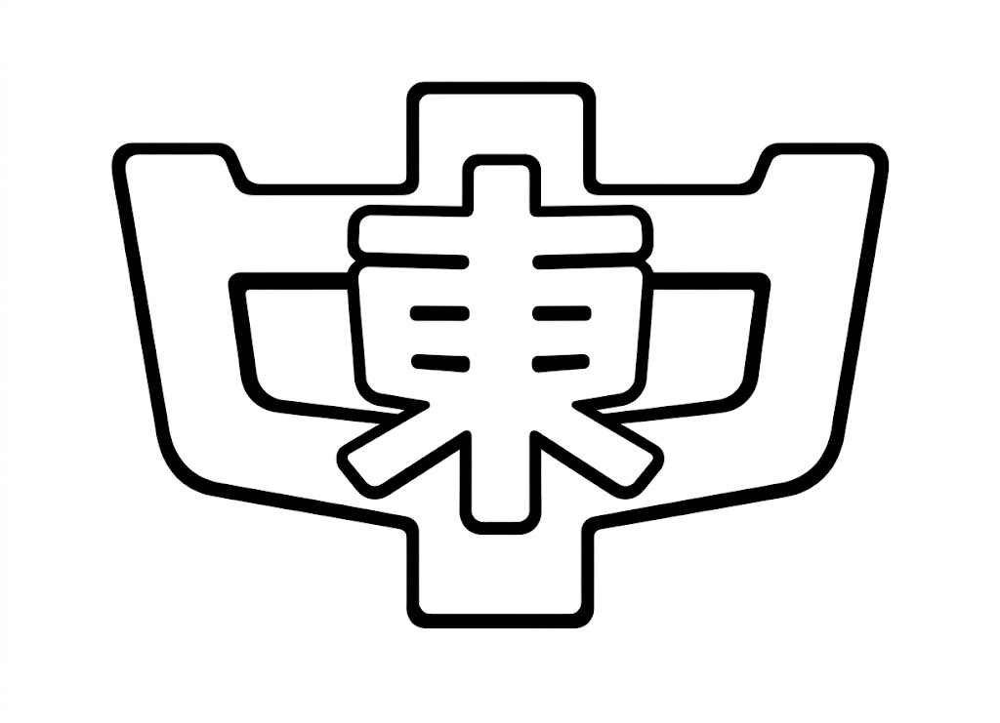
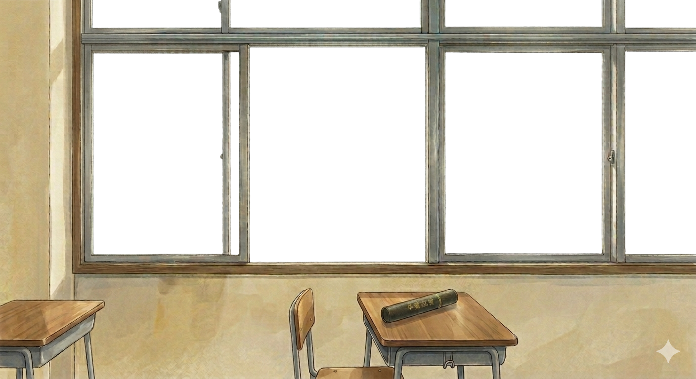
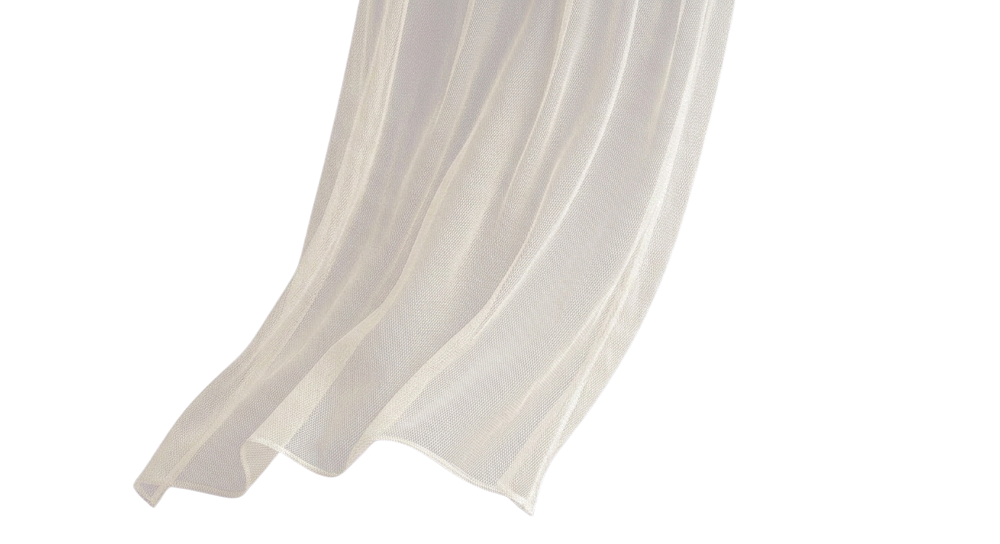
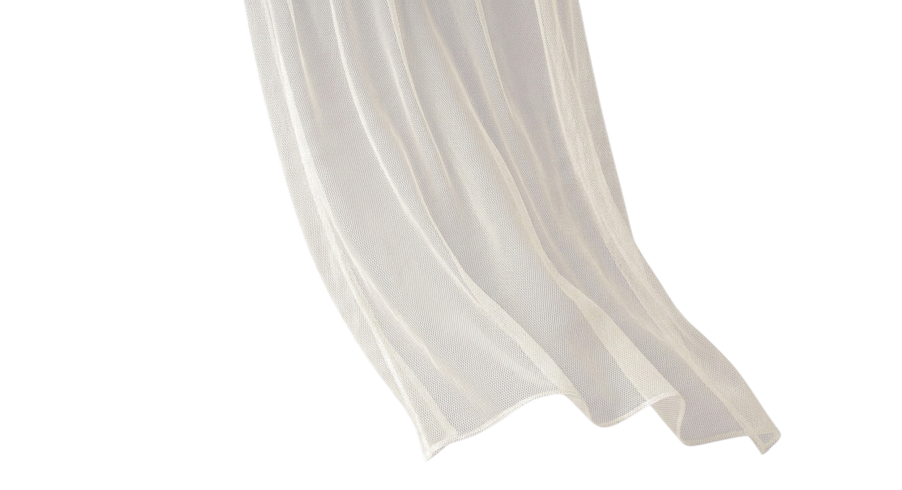
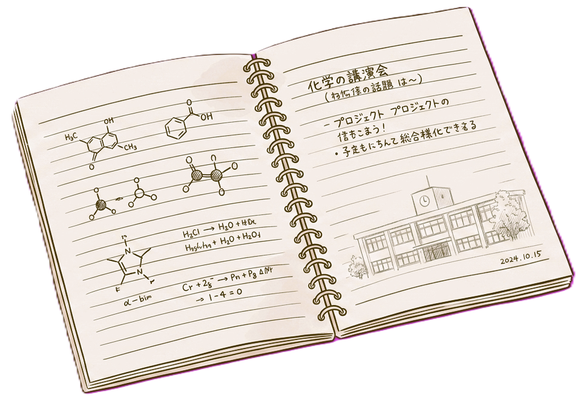
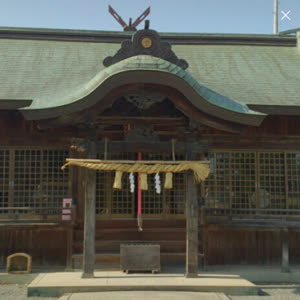

1993年
あの頃、何を話したっけ？
2027年
その続き、少し話そう。

当時の中学に戻って、思いっきり楽しみたい
県外の人も、これを機会に集まって楽しい時間を過ごせたら嬉しいです
顔や名前を覚えていなくても前回の同窓会では当時の気持ちに戻れたので、そんなのりでまたみんなに会いたい

前回の同窓会で、久しぶりに会ったのに一瞬で当時の中学時代に戻れるあの感覚がすごく楽しかったので、今回もみんなであの頃に戻って楽しみましょう
前回参加してくれた仲間にその後会えなくなってしまったこと…実感がなくて、またみんなで集まれたらいいねと話していたから、今でも会いたいなという想いを胸に集まりたい
50歳という大きな節目に、またみんなとワイワイ楽しく集まれるのが本当に楽しみです。最高の時間にしましょう
米子でみんなで集まって、あほしたい
みんなで最高の50歳の記念をつくろう！
| 日時 | 2027年 5月 5日（月・祝）18:00 〜 21:00 ※仮日程 |
|---|---|
| 会場 | ドドド（Cafe＊Rest＊Bar）鳥取県米子市四日市町80駐車場：店舗近隣の提携駐車場をご利用ください米子駅から徒歩約15分Google Map |
| 会費 | 8,000円（予定）当日、会場にて現金でお集めします |
| 〆切 | 2027年 1月 31日（日） |
| 服装 | スーツ着用禁止 ラフでリラックスした普段着でお越しください（シャツ・パンツ・ワンピースなど自由な服装でOKです）。 ※先生方はのぞく |
| 席順 | 組（クラス）単位に分かれて着席懐かしいクラスメートとご一緒にどうぞ。 |